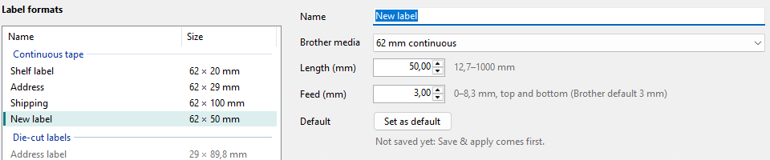
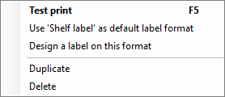
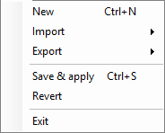

Adding and ordering label formats
A label format is a name for a roll and, on continuous tape, a length. The list applies to all QL printers on this PC.
-
New format
Click New. "New label" appears in the list, on 62 mm continuous tape and 50 mm long, and on the right the cursor is in the Name field.

-
Settings
- Name
- the paper size's name in the programs later.
- Brother media
- the roll: a continuous tape, die-cut labels or round labels.
- Length (mm)
- on continuous tape; next to it you see what the printer can do. On die-cut and round labels the label sets it.
- Feed (mm)
- the blank margin at the start and end of every label on continuous tape, 0 to 8.3 mm (Brother's default 3 mm).
The preview below shows the label with its sizes. Your changes take effect only after Save & apply.
-
Duplicate, delete, order
Right-click a format for Test print, the format as default, Design a label on this format (opens QL Label Maker), Duplicate and Delete.

To change the order, drag a format to another place in the list, or use Edit > Move up and Move down.
-
Import and export
In the File menu:

- Import
- Brother label formats (.dat, .org)... reads the list from Brother's own label format tool, JSON... an exported list. Brother factory list brings back the formats Brother ships; in versions without that list the item is grey. Then you choose: Replace list or Add.
- Export
- as a Brother file (.dat) for Brother's tool, or as JSON, for example for another PC.